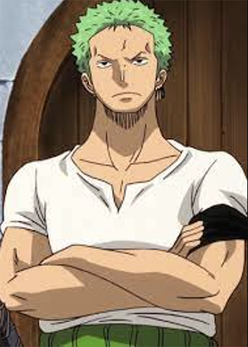
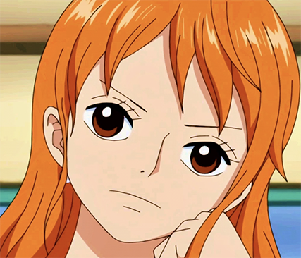
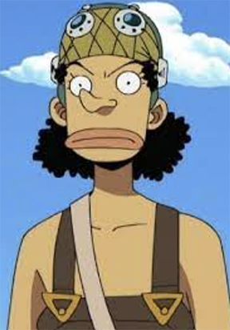
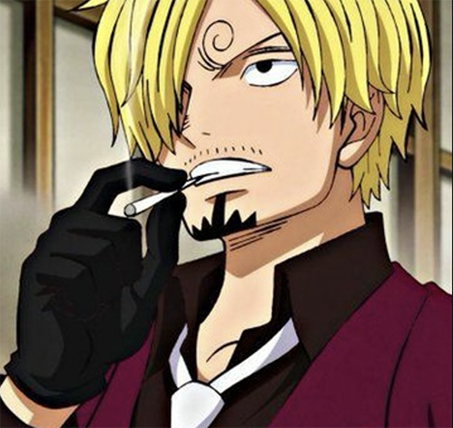
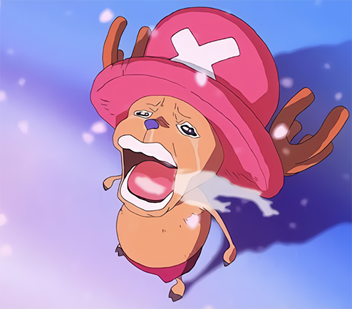
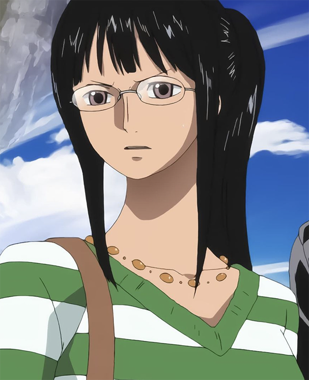
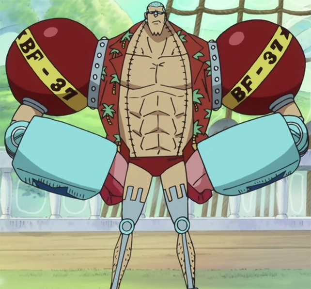
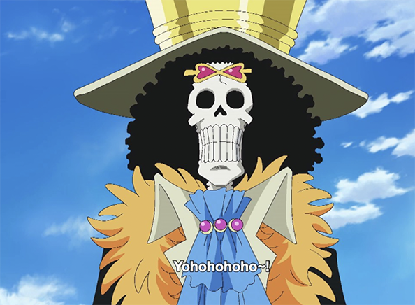
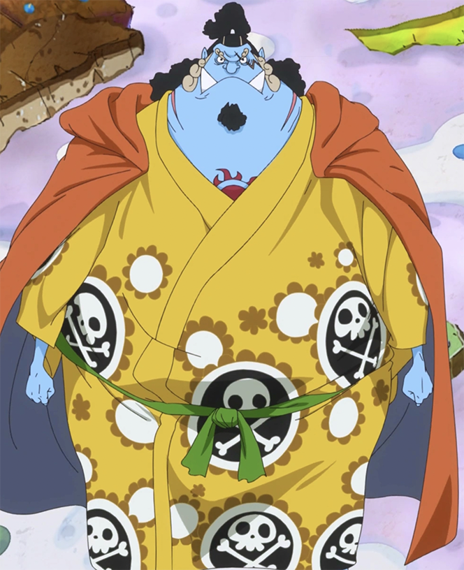

On this website I will give you all the info you need to know in order to start the bohemoth of a show. One piece at the time of the publishing of this article One Piece has 1,049 episodes and 1,073 chapters making it difficult for many to get into the show. Here you can find the information for the main cast, the story (spoiler free), and some tips on how to watch the show without getting burned out.
Luffy is a teenage boy that is highly optimistic, he has a very strong sense of humor. He isn't the brightest bulb in the box but his emotional intelligence is unmatched. His main goal in life is to be the pirate king, but unfortunatly it isn't as easy as it seem because there are millions of others trying to hold the title. He is very selfish but has a kind heart and often helps others along the way. Him and his crew work very well together even though they often but heads.
"Forgetting is like a wound. The wound may heal, but it has already left a scar." - Monkey D. Luffy
| Zoro | Zoro is a swordsman and also the unofficial vice captain of the crew. He utilizes the three sword method and has the nickname "Minority Hunter Zoro". He is a very good combat fighter, he's probably the most chill straw hat howerver he isn't the smartest and gets lost very easily. |  |
| Nami | Nami is the navigator of the crew. She uses her body to her advantage she is very smart and quick witted. However she lacks in strength. She has a very tragic past. The coolest part is that Nami can manipulate the weather to fight in combat. |  |
| Ussop | Ussop is notorious for his episode 517 meeting with Nami. He is a coward that aspires to become a brave solier of the sea. His father left him when he was young to become a pirate and Ussop plans to meet him one day. Fans have given him the nickname GOD USSOP due to events that happen in the show. |  |
| Sanji | Sanji is a sous-chef for the crew. He is always smoking a cigarette, and loves any woman his eye can meet. He has an unique fighting style only fighting with his feet so he doesn't mess up his cooking hands. His backstory is revealed early on and more is built on later, he is probably the most complex out of all the straw hats characterwise. |  |
| Chopper | Choppers favorite is white cream, he devours it. He is seen as the mascot of the crew and is really cute. He has rumble balls (drugs) that he can pop to get large. He is the doctor of the group and has saved the crew many times. Chopper owns the human-human fruit allowing him to change forms. One Pieceeeee, THE ONE PIECEEEEE IS REEEAALLL. |  |
| Robin | Robin is the quietest most reserved of the crew. She has a very dry and dark sense of humor that often makes you laugh. She is the smartest on the crew being the archeologist. She is very important part of the group and she is directly related to them being able to find the One Piece. She ate the flour-flour fruit and is able to sprout limbs or other body parts off of any surface. |  |
| Franky | Franky is half robot and half human and he often makes physical alterations to himself. He is the shipwrite of the crew and built the current ship. He has many creative weapons built into him including nipple lights. He also has a mech and many other things he can utilize in battle. His catchphrase is SUPER and you would be lucky to go an episode without hearing it. |  |
| Brook | Brook was a pirate that died at sea. He ate the Soul-Soul fruit giving himself a second life, he now how access to supernatural powers. He is a global sensation rockstar. He has an iconic laugh that sounds like YOHOHOHOHOHOHO. |  |
| Jinbe | Jinbe is the newest member to join the crew. He is a fishman so he is half fish half man. He is the helmsan of the crew. He is a very skilled fighter mastering fishman karate and is even better in the water. He was previously an warlord of the sea before joining the straw hats crew. |  |
Think of an arc like a season, it is basically a certain part of the show, some last only a couple episodes while some could last 200+.
One Piece is one of the best shows made ever. It has everthing to offer, good characters, plot, villains, political issues, world building, and immersion. If you give this show a chance you will quickly get hooked, the large amount of episodes can be scary, just take your time theres no deadline to finish the show. If you ask any fan they would ask for 1000 more episodes. This show makes you feel like you are really there and I hope this website made you at least consider watching.
Phone: 704-111-1234
Email Adress: WELIKEONEPIECE232@gmail.com